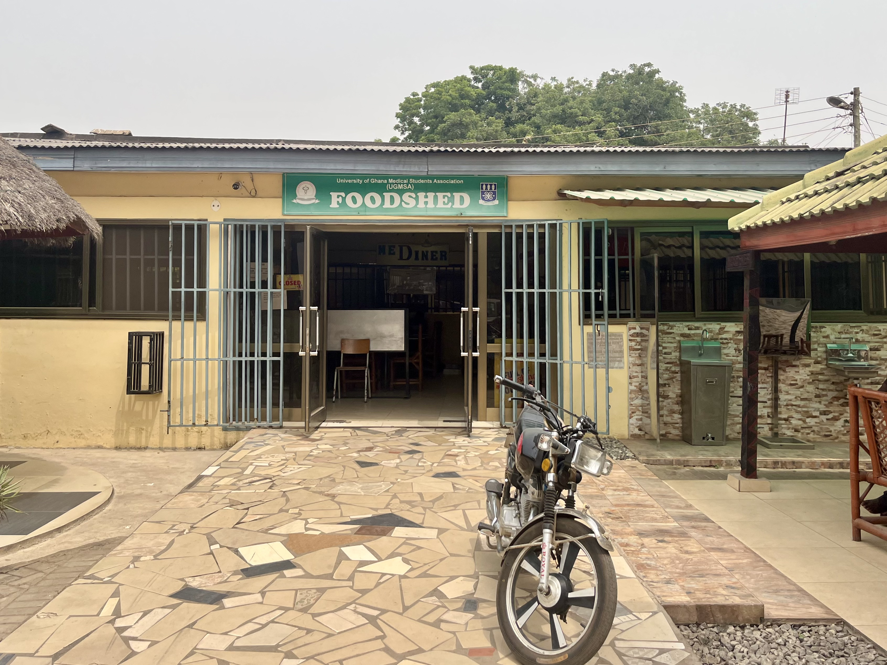

notes from accra
Harmattan
Thursday February 8, 2024
The air quality in Accra currently ranks as the worst in the world right now, reaching over 300 AQI this week. Just walking outside for a few minutes leads to a sore throat and watery eyes. Pollution paints the sky a flat concrete grey, erasing away the clouds and rendering the sun into a wispy orange-red orb. I learned from one of my classmates that this haze develops sporadically but occurs commonly throughout Harmattan, a dry season characterized by dusty winds. Apparently, Harmattan typically happens in late December to January, but changing weather patterns in recent years have pushed the timeline out to February.
I'm glad I got to experience Accra this past weekend before Harmattan really kicked in. Although we neglected to hit the main tourist sights (there's still time), we explored more of the food & going out scene. With all the new changes already, I think we lapsed into autopilot and effectively just recycled our classic city weekend playbook: kicking things off with a Friday night dinner, followed by a late night out, then a slow Saturday for recovery, and capped off with an extended Sunday lunch. By doing the same things I do anywhere else, I feel like I got to understand the pulse / character of the city. Accra reminds me a lot of New York. There is so much to do, with potential activities spanning a large spectrum of how much you can spend. The scene Friday night could have been plucked right out of midtown Manhattan — if you swapped out all the usual white people for Ghanaians. The same could be said for Sunday lunch at SandBox beach club, where we unintentionally ran into friends from college and some other American medical students.
This week in the hospital, I joined my assigned team of final-year medical students and participated in their daily morning clinical activities. On Monday, all the trainees on the floor rounded together. One consultant (i.e., specialist doctor) led rounds for a massive group of students, house officers, junior residents, senior residents, and some pharmacy students. I was struck by the high ratio of learners to patients; our group of 25+ saw just 5 patients. With this rounding experience, I appreciated how it may be hard to stay engaged in such a saturated learning environment. At times, it was hard to follow even if I spent all my energy on trying to listen. Medical wards at baseline are already a chaotic environment. Imagine the cacophany when you add on a 25 person flock hovering around a single patient bed.
Throughout the week, I consistently noticed the strong emphasis placed by Ghanain doctors on building good hisory-taking and physical exam skills. On Tuesday, I went to cardiac wards with the med students for a review of the cardiovascular exam. A similar session for the abdominal exam was held on Wednesday morning. In both settings, one student would perform the exam and narrate their findings aloud, while other students would weigh in for feedback and the instructor would highlight critical teaching points. Back in the U.S., I'm used to clinicans breezing past the physical exam, hurriedly placing their stethoscope on a patient's chest for a few seconds just so they can document "RRR" (regular rate and rhythm) for the electronic health record note. Meanwhile, I've been seeing doctors here palpate the chest wall, meticulously measure the liver after tapping on the abdomen, and listen to the spleen (!) with their stethoscopes. One consultant explicitly commented on this attention to detail, remarking that their low-resource health system demands excellence in such techniques, unlike the U.S. where "doctors can just order any tests... if insurance pays for it."
I've enjoyed spotting the differences in disease presentations seen here compared to back home. It feels like I've entered a parallel universe, where the medicine is still the same but the likelihoods are vastly different. While brainstorming possible diagnoses for an elderly man with pulmonary symptoms, unintentional weight loss, and back pain, one resident speculated that our patient may have Pott's Disease (tuberculosis of the spine). At first, I was confused as to why the resident had made such a leap before even considering malignancy. In my own limited experience, I had never seen Pott's Disease land a spot at the top of a potential diagnosis list. But in a region with high tuberculosis burden and relatively low tobacco smoking, the odds of seeing later-stage tuberculoid disease become more serious considerations. In another patient encounter, I came across a middle-aged woman with thyroid disease. During a discussion on potential etiologies, I found out that iodine deficiency ranks highly as a common cause for thyroid disorders here. Over the years, the Ghanaian government has implemented policies (starting in the early 2000s) to increase salt iodinization. Although these programs led to significant improvement, iodine deficiency still remains an important concern to keep in mind.
In general, I have tuned in so far on the similarities and differences here vs in the U.S., keen to find the many ways in which environment shapes the practice of medicine. This compare & contrast framework has felt like the most natural strategy I could use to understand such a new setting. In the coming days, I'll try moving beyond this lens and offer some more reflections in my next post.
Scenes from Korle Bu
Dormitories
This is one of the multiple identical buildings where house officers, residents, or medical students tend to live.

The Commute
Each morning, I take a taxi down La Road to go in to the hospital. This photo misleadingly suggests that there is no traffic.

Med Diner
At the edge of campus lies the hospital canteen, or Med Diner, or the foodshed. Take your pick at you what you want to call it, but the food is good.

Life in Accra
Ghana National Museum
Ellelan staring down the The Big Six, aka the founding fathers of Ghana. Only four featured here...

SandBox
A slow day at SandBox Beach Club felt like a nice break from the everyday bustle of Accra.